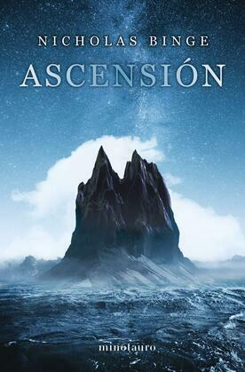
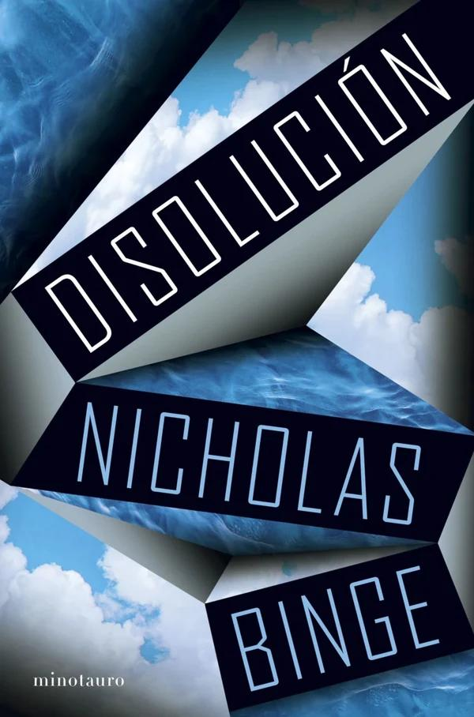

Tecnothriller: una mujer entra en los recuerdos de su marido, que alguien está borrando, y descubre un secreto que amenaza la realidad.
nuevoslibros.com · DisoluciónDatos bibliográficos de la edición española: papel y ePub.
tercerafundacion.net · Disolución¿Estoy avergonzado? Supongo que sí, quizá no de mi inteligencia, pero sí de lo que he hecho con ella. No pasa nada. A veces, la gente debería avergonzarse. En ocasiones, se lo merece.
3Los nuevos descubrimientos dependen de algo más que de la curiosidad. Están íntimamente ligados al destino de nuestro país. Un destino en el que todos creemos. Nuestro país nació de la oscuridad, el frío y en un páramo, y cada año que descubríamos algo nuevo, era asombroso
4La falta de seguridad no contrarrestó la necesidad. El progreso nunca es fácil, pero es necesario.
11Si no, la raza humana se estancará para siempre. Nunca progresaréis más allá de lo que sois ahora. Se os ignorará y olvidará, y os quedaréis atascados en este pequeño y lamentable plano de existencia, en este diminuto planeta. Nunca llegaréis a nada.
1pero ya sabes lo que dice Sherlock Holmes sobre lo improbable. —«Cuando hayas descartado lo imposible, lo que quede, aunque sea improbable, debe ser la verdad».
2Giacometti
5¿Estoy avergonzado? Supongo que sí, quizá no de mi inteligencia, pero sí de lo que he hecho con ella. No pasa nada. A veces, la gente debería avergonzarse. En ocasiones, se lo merece.
6El poder no es una cuestión de rango. El poder consiste en tener el valor para darse cuenta de que uno dirige su propia vida. Pero la gente como tú —me golpeó con un dedo en el pecho— sois unos cobardes: teméis ser responsables de vuestros propios actos, así que inventáis dioses, o desventajas o política o un montón de tonterías para explicar el hecho de que ellos tienen el control. ¿Crees que estoy aquí porque se me da bien escalar montañas por naturaleza? No, Harold. Soy el dueño de mi destino, porque tengo la voluntad de serlo y porque elijo serlo. Nada más importa.
8Solo tienes que aceptar quién eres».
9Porque eso es la vida. Un ascenso constante. Un crecimiento eterno. La lucha continua contra la entropía. No importa cuál sea el destino ni lo que haya en la cima; lo único que importa es que no dejes de subir. Eso es lo que significa vivir, Harold. Eso es lo que significa ser humano.
10Lo que tenga que ser, será. Ya ha ocurrido. Está pasando ahora mismo. Depende de ti decidir cómo hacer que cuente. Cómo de hermoso quieres que sea.
7ensueño de sus recuerdos, un escudo contra los pensamientos que trataban de invadirle el cerebro.
Sobre «Giacometti» (nº 2). Alberto Giacometti (1901–1966) fue un escultor suizo famoso por sus figuras humanas extremadamente alargadas, delgadísimas y rugosas, como L'Homme qui marche , que parecen consumidas por el espacio que las rodea. En la novela la referencia evoca cuerpos estirados, deformados por la montaña. Visualmente, es la idea del libro: subir tanto que lo humano se adelgaza hasta casi desaparecer.
Lectura del conjunto.Casi todas tus citas son la retórica del progreso total: un destino nacional que nace «de la oscuridad, el frío» (nº 3); la seguridad sacrificada a la «necesidad» (nº 4); la voluntad como único poder (nº 6); la vida como «ascenso constante» contra la entropía (nº 9), y la amenaza final: si no subís, «nunca llegaréis a nada» (nº 11). En medio, una sola grieta: la vergüenza de un científico por lo que hizo con su inteligencia (nº 5). Y antes de todo, el método de Holmes (nº 1): descartar lo imposible. Es la única defensa racional ante una montaña que no debería existir.
Cómo conecta con tus intereses.
Tecnothriller: una mujer entra en los recuerdos de su marido, que alguien está borrando, y descubre un secreto que amenaza la realidad.
nuevoslibros.com · DisoluciónDatos bibliográficos de la edición española: papel y ePub.
tercerafundacion.net · DisoluciónBinge tiene dos novelas en castellano, ambas en Minotauro. Su debut, Ascensión (2023), es el libro de esta hoja.